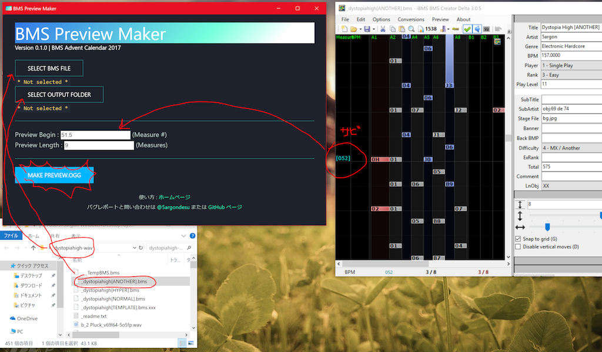

次世代のBMSはフォルダの中に「preview.ogg」があるはずだ! IIDX19以来の曲プレビュー機能でゲームがよりユーザフレンドリになって、作曲家もジャンルも知らずのプレイヤーに作品の強みを直接に宣伝できます。LR2に対応していないけど次世代BMSプレイヤーBeatorajaなどはすでに preview.ogg を再生できます、だからプビュー作って置きましょうか。
このツールは小節の範囲にて .bms から .ogg を制作します。出力ファイルの内容はその .bms のオートプレイと同じになります。
これをクリスマスプレセントにしたいけど間に合わなさそうになっています。後で使い方を適当に書きます (この画像をみると分かるかも)
